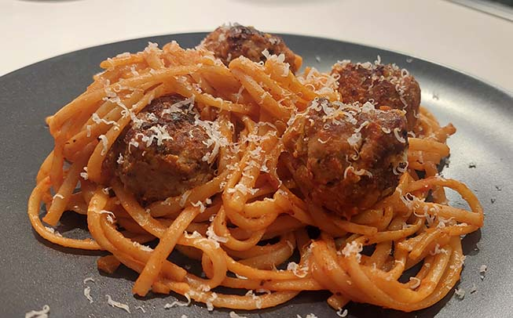

Fettuccine med kødboller
Ingredienser
2 pers.
| 200 g | Fettuccine |
| Kødboller: | |
| 400g | Hakket svinekød |
| 1 | Æg |
| 3/4 | Løg |
| 4 fed | Hvidløg |
| 1 tsk | Spidskommen |
| 2 spsk | Creme fraiche |
| 2 spsk | Rasp |
| 2 spsk | Olie |
| Salt | |
| Peber | |
| Tomatsauce | |
| 1/4 | Løg |
| 1 fed | Hvidløg |
| 2 spsk | Olivenolie |
| 70 g | Tomatpuré |
| 1 kop | Pastavand |
Fremgangsmåde
- Hak løg og hvidløg fint
- Hæld 2 spsk olie på en stegepande ved middel-høj varme. Sauter løg (3/4), hvidløg (4) og spidskommen i 5 minutter
- Tilsæt salt og friskkværnet peber efter behov, og sæt det derefter til siden til afkøling
- Rør hakket svinekød, æg, de sauterede løg og hvidløg, rasp, creme fraiche, salt og peber sammen til en ensartet masse
- Form kødboller på størrelse med golfbolde
- Varm 2 spsk olie op på en pande ved middel-høj varme. Steg kødbollerne 2 minutter på hver side til de er færdige, og sættes derefter til siden
- Pastaen koges i letsaltet vand i ca. 10 minutter til den er al dente. *HUSK* gem en kop pastavand
- Imens pastaen koger, sauteres løg (1/4) og hvidløg (1) på en pande med olivenolie i 2 minutter, til de er bløde. Tilsæt 70 g tomatpuré og steg videre i 5 minutter
- Når pastaen er færdig med at koge, hældes 1 kop pastavand på panden med tomatpuré, til blandingen løsner sig
- Bland pasta og kødboller med saucen på panden, og tilsæt salt og peber efter behov
Retten kan med fordel toppes med lidt revet granaost og friskkværnet peber
- Velbekomme